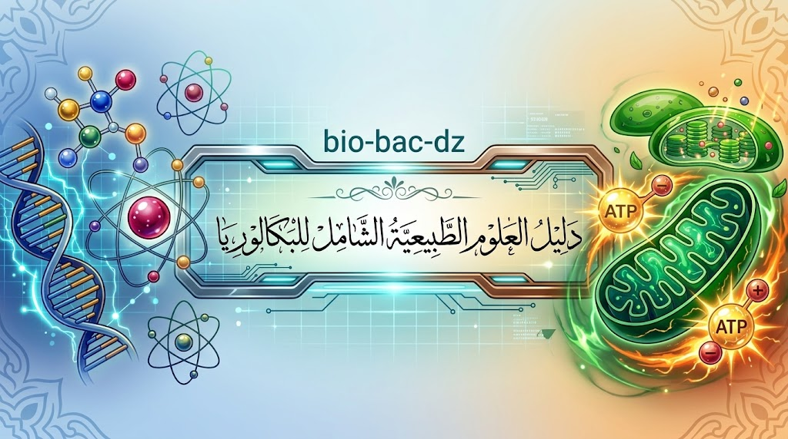

علوم الطبيعة والحياة لطلاب البكالوريا
دروس وملخصات الوحدات وتمارين محلولة وفق المنهجية الرسمية، لشعبتي العلوم التجريبية والرياضيات.
- 8وحدات دراسية
- 2شعبتان: تجريبية ورياضيات
- 100%مجاني بالكامل
- —يوم على البكالوريا
منصة مجانية
•
اختر وحدة للبدء
الوحدات الدراسية
اختر الوحدة التي تريد مراجعتها
المراجعة والتحضير للامتحان
المكتسبات القبلية، منهجية الإجابة، والبكالوريا
العد التنازلي لشهادة البكالوريا 🍃
اضغط على أي دائرة لرؤية التفاصيل ✨
جاري جلب العبارة التحفيزية...
تم نسخ العبارة والرابط بنجاح! 📋معلومات ومساعدة
التواصل والإبلاغ عن خلل، وسياسة الاستخدام والتنبيهات